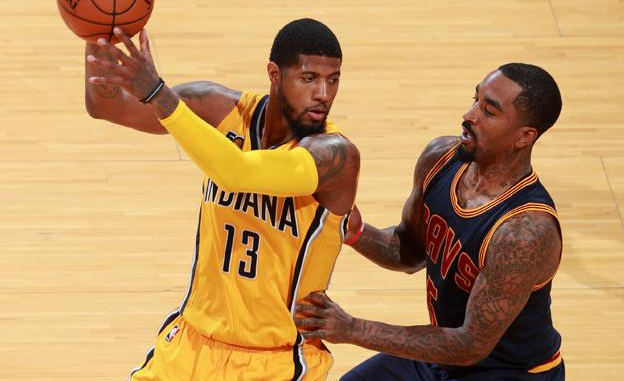

北京时间6月18日，据ESPN报道，印第安纳步行者虽然在上赛季东部季后赛首轮被克利夫兰骑士4-0横扫，但他们在这四场比赛一共也只输给骑士16分。如今距离步行者被淘汰已经过去了很长一段时间，但在近日谈到这轮系列赛，步行者当家球星保罗-乔治仍是心有不服，因为他认为步行者的实力并不逊于骑士。
“从某种程度来说，我认为我们的实力十分接近，”乔治近日在采访中说道，“这一点不难相信，因为我们是在上赛季季后赛同骑士交手的东部球队中输分最少的一支，我们本能赢下系列赛。但与此同时，我们也需要补充更多的天赋，我们需要更好的球员。”
听闻弟子的自信言论，步行者主帅内特-麦克米兰也是甚感欣慰。
“听到他（乔治）说这个我其实并不惊讶，”麦克米兰在采访中说道，“我反倒还很希望他这样说。”
上赛季常规赛，乔治总共代表步行者出场75次，场均出战35.9分钟，能够拿到23.7分6.6篮板3.3助攻另有1.5抢断。
欢迎持续关注NBA